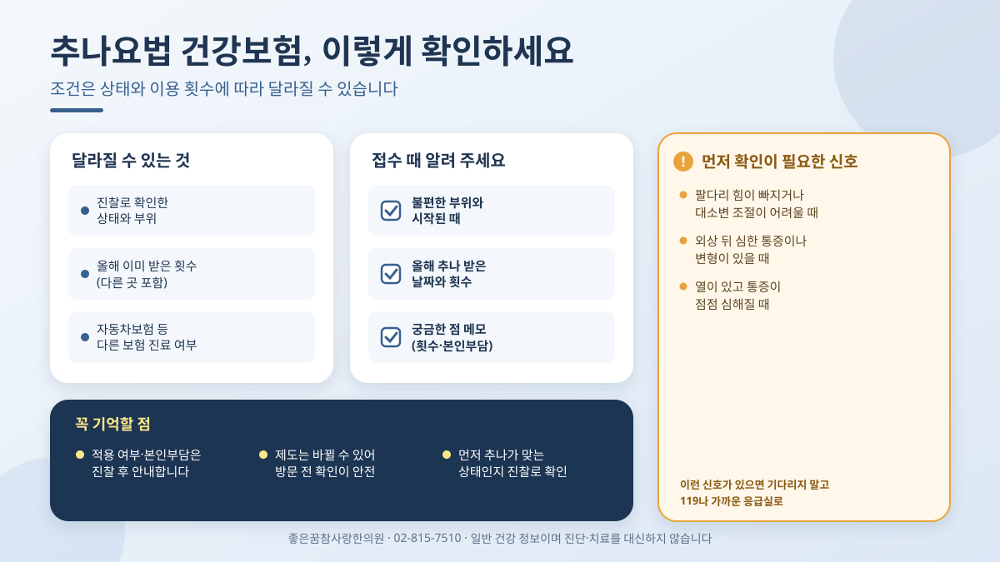

이종호 한의사 감수좋은꿈참사랑한의원 대표원장 (한의사 면허번호 19769)발행 2026-11-22 · 수정 2026-11-25
이 글의 차례
추나요법을 건강보험으로 받을 수 있는지, 몇 번까지인지, 본인부담은 어떻게 되는지 궁금해하시는 분이 많습니다. 이런 조건은 제도에 따라 바뀔 수 있고 진찰 결과에 따라서도 달라질 수 있어, 이 글에서는 구체적인 기준을 적지 않습니다. 적용 여부와 횟수, 본인부담은 방문 전 전화(02-815-7510)로 확인해 주세요.
대신 확인할 때 무엇을 물어보고 준비하면 좋은지, 그리고 보험과 별개로 지금 몸에 추나가 맞는지를 어떻게 살피는지 정리했습니다.
왜 미리 확인해야 할까요
- 추나요법의 건강보험 적용 여부와 조건은 제도에 따라 바뀔 수 있어, 예전에 들은 이야기나 다른 사람의 경우가 지금 나에게 그대로 맞지 않을 수 있습니다.
- 진찰 결과에 따라 달라질 수 있는 부분이 있어, 전화로 대략을 확인한 뒤 진료실에서 다시 안내받는 것이 정확합니다.
- 교통사고처럼 다른 보험으로 진료받는 경우는 처리 방식이 달라질 수 있어, 보험사 담당자와 한의원에 각각 확인해 두는 것이 좋습니다.
- 미리 확인해 두면 진료 당일에는 비용이나 횟수 걱정보다 몸 상태 이야기에 집중할 수 있습니다.
먼저 이렇게 여쭙니다
- 어느 부위가 불편하고 언제부터 시작되었나요?
- 이전에 같은 부위 때문에 치료받은 적이 있나요?
- 다른 의료기관에서 추나를 받은 적이 있나요?
- 다른 보험(자동차보험 등)으로 치료 중인가요?
- 골절, 골다공증, 수술 이력이나 복용 중인 약이 있나요?
전화로 확인할 때 물어볼 것
- 지금 불편한 부위로 추나요법을 받을 때 건강보험이 적용되는지
- 적용된다면 횟수와 본인부담은 어떻게 되는지
- 예전에 다른 곳에서 추나를 받은 적이 있다면 그 이력이 영향을 주는지
- 교통사고 등 다른 보험으로 진료 중일 때는 어떻게 되는지
- 첫 방문 때 가져가면 좋은 자료(검사 결과지, 복용 약 목록 등)
- 전화로는 확인할 수 있는 범위에서 안내해 드리고, 진찰이 필요한 부분은 진료 때 다시 말씀드립니다.
보험과 별개로 살피는 것: 추나가 맞는 상태인지
- 추나는 한의사가 손이나 몸의 일부로 관절과 근육의 움직임을 조정하는 수기 치료로, 목·등·허리·골반이 어떻게 움직이는지 평가한 뒤 기법을 고릅니다.
- 골절, 심한 골다공증, 팔다리 힘 빠짐 같은 신경 이상이 있으면 추나를 하지 않거나 신중하게 판단합니다.
- 강한 교정이 부담스러운 분은 부드러운 기법으로 진행하기도 하며, 받는 도중 불편하면 바로 말씀하시면 됩니다.
- 대개 침을 먼저 놓고 추나를 한 뒤 물리치료로 마무리하지만, 상태에 따라 순서와 방법을 조정합니다.
상황별 예시
- 예를 들어 오래 앉아 일하는 직장인이 퇴근 뒤 평일 저녁(20:00까지)에 들르려는 경우라면, 보험 적용 여부를 전화로 먼저 확인하고, 첫날은 진찰과 상담에 시간이 더 걸릴 수 있어 여유 있는 시간대로 예약해 보세요.
- 예를 들어 교통사고 뒤 목과 허리가 아파 추나를 생각하는 경우라면, 처리 방식이 달라질 수 있어 보험사 담당자에게 먼저 확인하고, 한의원 접수에 필요한 것은 방문 전 전화로 확인해 주세요.
- 예를 들어 어르신이 허리 때문에 추나를 원하시는 경우라면, 골다공증 검사 결과나 복용 중인 약을 먼저 알려 주셔야 추나가 맞는지, 어떤 세기로 할지를 신중하게 정할 수 있습니다.
스스로 점검해 보세요
- 불편한 부위와 시작된 때를 한두 문장으로 말할 수 있나요?
- 다른 곳에서 추나를 받은 적이 있다면 그 시기와 부위를 적어 두었나요?
- 지금 교통사고 등 다른 보험으로 진료 중인지 확인했나요?
- 골절, 골다공증, 수술 이력이나 복용 중인 약을 정리해 두었나요?
- 팔다리 저림이나 힘 빠짐처럼 먼저 확인이 필요한 신호는 없나요?
- 보험 적용과 본인부담을 방문 전 전화로 확인했나요?
한의원에서 함께 살필 수 있는 경우
- 추나를 받고 싶은데 지금 상태에 맞는지 궁금한 경우 진찰로 함께 확인합니다.
- 건강보험 적용 여부와 본인부담이 궁금한 경우 방문 전 전화로 먼저 확인하시도록 안내드립니다.
- 치료 횟수와 방법을 미리 알고 싶은 경우 상담에서 대략의 흐름을 함께 정합니다.
- 강한 교정이 부담스러운 경우 부드러운 방법을 포함해 진찰 뒤 함께 정합니다.
좋은꿈참사랑한의원에서는 첫 방문 때 불편한 자세와 동작, 시작된 때를 먼저 충분히 듣습니다. 이어서 모든 분께 맥을 짚고, 필요하다고 판단될 때 혀와 배를 살핍니다. 서 있는 모습과 움직이는 범위, 팔다리 근력을 확인하고, 필요하면 초음파로 근육과 힘줄을 봅니다. 그다음 추나·침·약침 가운데 지금 맞는 방법과 순서를 정하고 그 이유를 설명해 드립니다.
귀가 전에는 집에서 해 볼 동작과 다음에 확인할 일을 알려 드리고, 다음에 오시면 지난 이야기를 이어서 여쭙습니다.
이렇게 기록해 오시면 상담이 쉬워집니다
- 불편한 부위와 시작된 때, 이전에 받은 치료
- 다른 의료기관에서 추나를 받은 적이 있다면 그 시기와 부위
- 교통사고 등 다른 보험으로 진료 중인지 여부
- 궁금한 점(보험 적용, 본인부담, 함께 받는 치료)을 적은 메모
- 받고 싶은 날짜와 시간대(평일 09:30~20:00, 점심 13:00~14:00 / 토·일·공휴일 09:30~15:00)
얼마나 지켜보고 언제 상담할까요
- 자세나 오래 앉는 습관 때문에 생긴 뻐근함은 쉬는 간격과 자세를 바꾸며 1~2주 지켜볼 수 있습니다.
- 1~2주가 지나도 같은 동작에서 계속 아프거나 아침마다 몸이 굳어 일상이 불편하다면, 진찰을 받아 추나가 맞는 상태인지 확인해 보세요.
- 추나를 받은 뒤 하루 이틀 뻐근할 수 있지만, 점점 심해지거나 저림이 새로 생기면 다음 예약을 기다리지 말고 연락해 주세요.
- 아래 신호가 있으면 추나를 기다리지 말고 먼저 의료기관 확인을 받습니다.
이런 증상은 먼저 확인이 필요합니다
- 팔다리 힘이 빠지거나 대소변 조절이 어려운 경우
- 외상 뒤 심한 통증이나 변형이 있는 경우
- 열이 있고 통증이 점점 심해지는 경우
- 밤에 쉬어도 통증이 심하고 이유 없이 체중이 줄어드는 경우
복용 중인 약은 처방한 의사와 상의 없이 줄이거나 끊지 않습니다. 위 신호가 있거나 갑자기 심해지면 한의원 진료를 기다리지 말고 가까운 응급실을 이용하세요.
관련 글
- 교정추나는 어떤 진료이고, 어떤 경우에 받나요?
- 추나를 받은 날 집에서는 어떻게 지내면 좋을까요?
- 추나나 침 치료를 받다가 불편하면 바로 말해도 되나요?

여쭙는 것
- 어느 부위가 불편하고 언제부터 시작되었나요?
- 이전에 같은 부위 때문에 치료받은 적이 있나요?
- 다른 의료기관에서 추나를 받은 적이 있나요?
한의원에서 함께 살필 것
- 추나를 받고 싶은데 지금 상태에 맞는지 궁금한 경우 진찰로 함께 확인합니다.
- 건강보험 적용 여부와 본인부담이 궁금한 경우 방문 전 전화로 먼저 확인하시도록 안내…
- 치료 횟수와 방법을 미리 알고 싶은 경우 상담에서 대략의 흐름을 함께 정합니다.
먼저 확인이 필요한 신호
- 팔다리 힘이 빠지거나 대소변 조절이 어려운 경우
- 외상 뒤 심한 통증이나 변형이 있는 경우
- 열이 있고 통증이 점점 심해지는 경우
한눈에 보는 표
| 구분 | 핵심 |
|---|---|
| 여쭙는 것 | 어느 부위가 불편하고 언제부터 시작되었나요? 이전에 같은 부위 때문에 치료받은 적이 있나요? |
| 한의원에서 함께 살필 것 | 추나를 받고 싶은데 지금 상태에 맞는지 궁금한 경우 진찰로 함께 확인합니다. 건강보험 적용 여부와 본인부담이 궁금한 경우 방문 전 전화로 먼저 확인하시도록 안내드립니다. |
| 먼저 확인이 필요한 신호 | 팔다리 힘이 빠지거나 대소변 조절이 어려운 경우 외상 뒤 심한 통증이나 변형이 있는 경우 |
자주 묻는 질문
모든 통증에 보험이 되나요?
적용 여부는 진찰 결과와 제도에 따라 달라질 수 있어 이 글에서 정해 말씀드리기 어렵습니다. 방문 전 전화로 확인해 주세요.
몇 번 받을 수 있나요?
횟수 조건은 바뀔 수 있어 방문 전 전화로 확인해 주세요. 치료 횟수는 보험과 별개로 상태를 보며 함께 정합니다.
추나를 받으면 바로 좋아지나요?
반응은 사람마다 달라서 상태를 보며 진행 여부를 함께 정합니다.
교통사고로 다쳤으면 추나도 자동차보험으로 받나요?
사고로 인한 진료는 처리 방식이 달라질 수 있어 보험사 담당자에게 먼저 확인해 주세요. 한의원 접수에 필요한 것은 방문 전 전화로 확인해 주세요.
추나는 꼭 '뚝' 소리가 나야 하나요?
아닙니다. 소리는 치료의 목표가 아니며, 상태에 따라 부드러운 기법만으로 진행하기도 합니다.
전화로 상담하면 추나가 맞는지 알 수 있나요?
전화로는 보험 적용과 예약 같은 안내를 드리고, 추나가 맞는 상태인지는 서 있는 모습과 움직임을 직접 보는 진찰 뒤에 함께 정합니다.
좋은꿈참사랑한의원은 재진 때 지난번 이야기부터 이어서 여쭙니다. 진료시간과 예약은 오시는 길에서 확인하세요.
어디서 상담받을 수 있나요?
좋은꿈참사랑한의원은 서울 동작구 만양로2길 2 신성빌딩 3층·5층(서울 동작구 상도동, 7호선 상도역 3번 출구 근처)에 있습니다. 한의사 3명(이종호 대표원장, 조영기 수석진료원장, 정원영 진료원장)이 진료합니다. 진료시간은 평일 09:30~20:00(점심 13:00~14:00), 토·일·공휴일 09:30~15:00이며, 방문 전 전화로 확인을 권합니다. 예약은 네이버 예약, 카카오톡 상담, 전화 02-815-7510로 받습니다.
이 글은 일반적인 건강 정보이며 개인의 진단이나 치료를 대신하지 않습니다. 증상이 있거나 복용 중인 약이 있다면 진료를 통해 확인하세요. 치료 효과는 개인마다 다를 수 있습니다.
작성 기준: 일반적으로 알려져 있는 건강 정보를 참고해 정리했습니다(대표원장 감수). 증상 기록은 1~2주 동안 하루 1회, 비슷한 시간에 적어 오시면 지난 상태와 비교하기 쉽습니다.